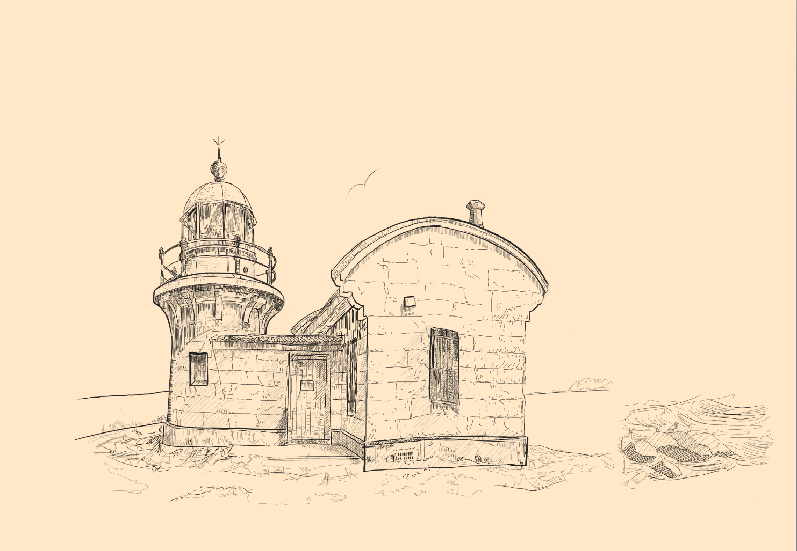
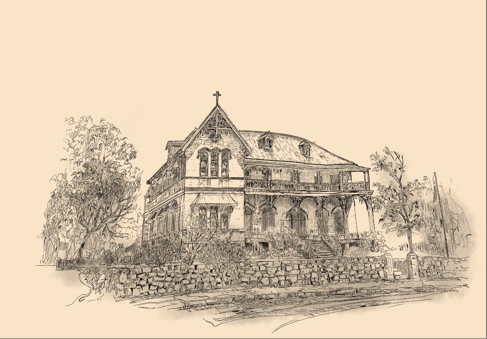
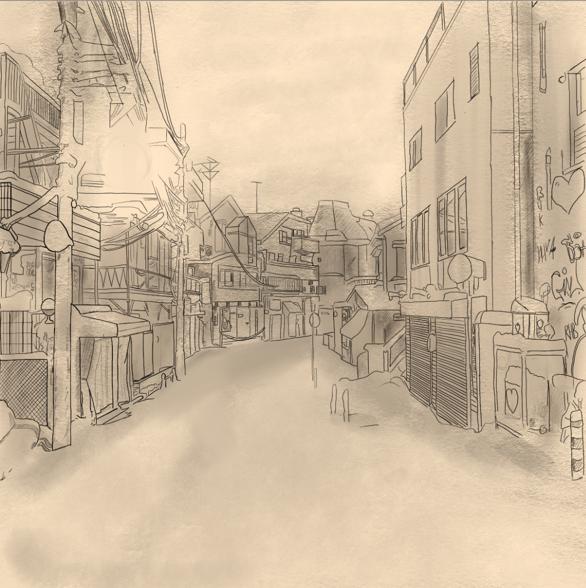

WORKS / DIGITAL ART
DIGITAL ART
Five pieces in two hands — three drawn line by line, two built flat out of colour.
← Back to Works


WORKS / DIGITAL ART
Five pieces in two hands — three drawn line by line, two built flat out of colour.
← Back to Works

